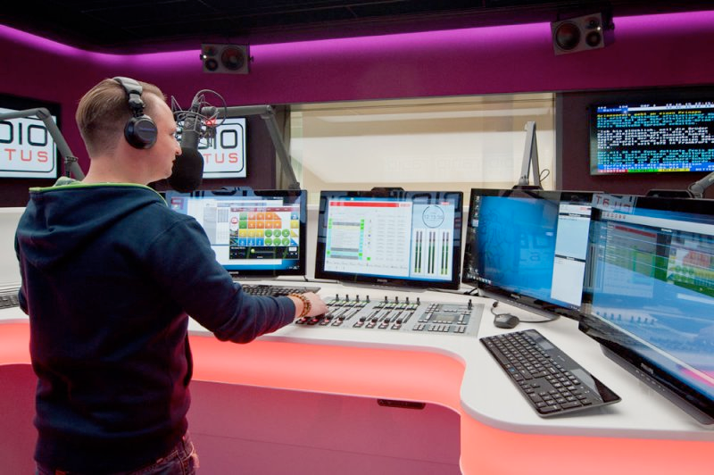

STAGETEC
AURUS Platinum
AVATUS
CRESCENDO Platinum
AURATUS
ON AIR flex
NEXUS
NEXUS Star
RIEDEL
RIEDEL-INTERCOM
Artist
Performer
Acrobat
Bolero
Tango
接口
内通面板
头戴系统
Motorola
Hytera
RIEDEL-MEDIORNET
MediorNet Compact
MediorNet MicroN
MediorNet MetroN
MediorWorks
RockNet
STX-200
配件
代理产品
解决方案
技术支持
特性
参数
案例
直观操作，易于掌握
因地制宜，独特灵活，适应环境需求
为广播应用设计
基于IP的模块化系统架构
系统仅受基础硬件限制
集成于NEXUS的音频处理，能够调用其所有的音频资源
通过NEXUS音频路由系统扩展输入输出格式
NEXUS音频板卡支持热插拔
使用NEXUS软件可设定操作路由系统的用户权限
音频处理器可多单元级联
每个音频处理器最多可处理54条输入通路

推子及监听面板中的所有控制和显示元素均支持用户自定义
一键调用工程、快照及自动化功能，音频模块库可编辑
可通过虚拟界面扩展硬件用户界面
为录音间及制作设计的监听及对讲电路
支持5.1到立体声完全下变换
通过LAN进行遥控监测和系统维护
调音台外观
外壳
轻质金属材质，最多集成6个面板
尺寸（宽x长x台面深度）
203mm x 363mm x 80mm（首个面板），之后每增加一个面板宽度增加180mm
重量
1800g,之后每增加一个面板重量增加600g
用户界面深度
800mm/31.5’’（包含扶手部分）
电源
（永久冗余）
电压范围
110V-230V
功耗
2个面板90W,3个面板150W
推子面板（OFAD）
模块尺寸（宽x长）
180mm x 340mm
推子模块通道条数
4
通道间距
38mm
按钮
每通道条10个按钮，一个编码器旋钮，1个OLED显示屏
推子
100mm触感Penny&GilesÆ电动马达推子
重量
约1100g
监听面板（OMON）
显示屏
2个TFT彩色屏幕
按钮
2个选择编码器旋钮（音量、监听源选择）及多个不同颜色按钮
尺寸（宽x长）
180mm x 340mm
重量
约770g
音频处理
输入通道数
最多54条
总线数量
最多32条
采样频率
44.1，48，96kHz
处理精度
40bit浮点
延时处理
1650ms（在Nexus DSP中加延时）
多声道模式
立体声、5.1
监听通路
最多4路（支持1条立体声/5.1监听+3条立体声监听）
N-1矩阵
16x16
控制
基于IP，使用Ember+遥控协议
转播车
中央电视台A2高清转播车
长治电视台10+2讯道高清转播车
演播室
长治电视台演播室
上海远程教育集团教学节目录制系统
广播电台
厦门广播电台直播间
厦门广播电台总控
相关下载
ON_AIR_flex调音台产品彩页
需要更多资料?
扫描二维码 关注STAGETEC公众号